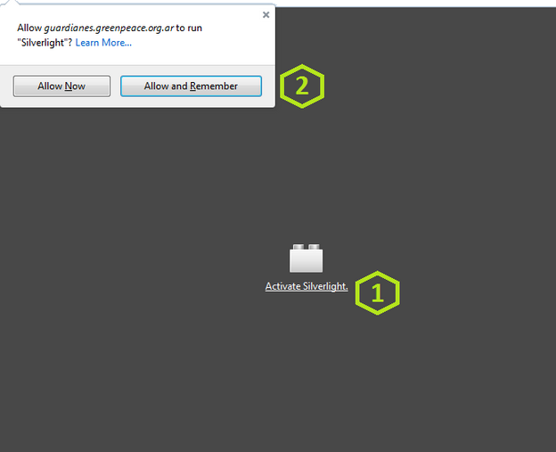

Para poder funcionar es necesario que tu equipo cuente con Microsoft Silverlight. Silverlight es una estructura para aplicaciones web que se instala en los exploradores de internet como Chrome, Firefox o Internet Explorer.
Para instalar Silverlight podés entrar en: https://www.microsoft.com/getsilverlight/ y seguir los pasos ahí indicados.
A partir de septiembre de 2015, Chrome no permitirá el uso de plugins basados en la tecnología que utiliza Silverlight. Te recomendamos utilizar otro explorador, como Mozilla Firefox.
Firefox puede ejecutar aplicaciones en Silverlight sin problemas. Solo requerirá que actives el plugin la primera vez que intentes usar Guardianes:
